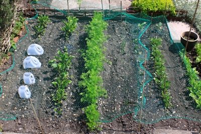
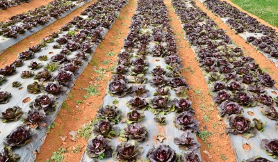

Start small.
Do not over do it. If you're beginning your first garden, help yourself avoid the feeling of being overwhelmed with weeding and general maintenance. You can grow a surprising amount of food in a bed that's 10 to 12 square feet. Some people tend to get carried away with vegetable gardening. This can lead to either neglect because the workload is too much. Also unless you are prepared to can or store a lot of vegetables, you should only grow what you are going to use.

Working and caring for your garden.
Our ancestors knew how to care for and live off the land. One thing you should not do is plant the same garden/vegetable plants in the same plot year after year. One reason for this is because plants tend to leach certain nutrients from the soil and this can over time lead to a less healthy garden plot. Rotating crops is a ancient practice that not only helps prevent soil leaching but also helps prevent concentrations of insects and parasites that are unfriendly to your garden plants from building up over time.
Watering is also crucial depending on what types of plants you are growing. Melons, Cucumbers, Tomatoes all require more watering that other vegetable plants such as peas, lima beans and okra. The growing season is longer in the Southern United States, however you should not plant all your vegetable plants at one time. You will find out over time that staggering your planting times so that different types of vegetables harvest at different times. This is especially true in the hot summer months when extreme heat can take a toll on your plants.

Caring for your plants
Proper care for your garden plants requires a lot of planning and preperation. There are many things that must be taken into consideration when caring for your plants.
When you are first planning your garden, you should research to see what types of plants or vegetables are best suited for your geographical region and climate. Obviously plants that thrive in cooler temperatures are not going to do well in climates that have high season temperatures and humidity. Soil type is also important when deciding what type of plants to choose for your garden. Many garden plants prefer well drained soil that allows oxygen to reach the root system and to let excess moisture drain away from the plants roots.

Controlling insects and other garden pests.
There has always been a great debate on what is the best way to control insects and other pests that plague our gardens. Many people prefer commercial pesticides or fungicides for controlling garden pests. The drawback to these solutions is that the chemicals are toxic and the gardener usually must wait a certain amount of time before vegetables in the case of vegetable gardening can be safely harvested and consumed. Other gardners prefer more organic methods of controlling gardening pests such as removing old soil and replacing with new soil, spreading Diatomaceous Earth in your garden. Diatomaceous Earth kills insects by actually cutting into their bodies and then absorbs the moisture from insects bodies. The treatment should be applied during dry conditions and repeated after a rainfall has occurred or even after a heavy dew.
The type of plant food or fertilizer is also important as different plants have different nutritional requirements. Some plants require plant food or soil that has high nitrogen content and other plants require not as much nitrogen but other minerals such as zinc or potassium. At one time it was quite commont for gardeners to contact the local County Extension Office in their area for answers to some of their gardening questions and they could even require someone to come out and perform soil testing. Today you can even order your own soil testing kits online from various sources such as Lowe's or Amazon.com.